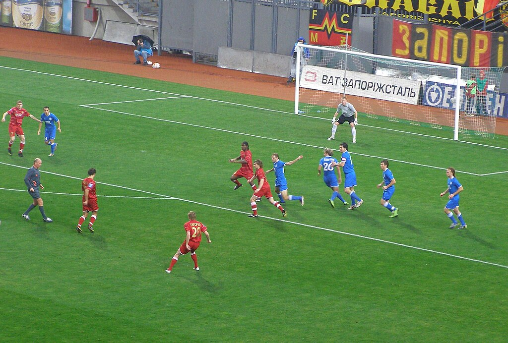
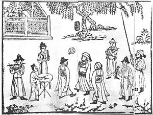
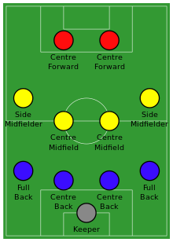
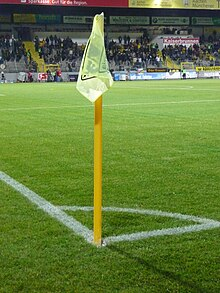
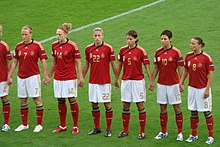

Футбол
Футбол (від англ. football) — командний вид спорту, в який грають дві команди по
одинадцять
гравців зі
сферичним м'ячем. Близько 250 мільйонів чоловіків і жінок із більш ніж 200 країн грають у футбол, що робить
його найпопулярнішим у світі видом спорту. Футбол — олімпійський вид спорту.
Назва в Україні
Згідно зі спогадами Степана Шаха, професор Іван Боберський 1908 року організував серед учнів Академічної
Гімназії
Львова «Спортовий Кружок гри ніжної пилки», який самі гімназисти називали «футбалевий клюб».

До радянської анексії на заході Україні також використовували назву ко́паний м'яч, або ко́панка.
Головні правила
Арбітр показує жовту картку.
Уперше правила введені 7 грудня 1863 року Англійською футбольною асоціацією. Базувались на придуманих у
Кембриджському університеті положеннях гри.
Футбольний м'яч.
- Грають на футбольному полі завдовжки 90—120 метрів і завширшки 45—90 метрів. На двох протилежних кінцях
стоять
ворота (завширшки 7,32 м і заввишки 2,44 м), куди потрібно завести м'яча.
- М'яч, обвід якого повинен бути 68-71 см,
а маса — від 396 до 453 грамів. У момент початку гри тиск усередині кулі має бути від 0,6 до 1,1
атмосфери
(600—1100 г/см²).
- Кількість запасних гравців визначається регламентом змагання і знаходиться у межах від 3 до 7.
- Рішення судді є остаточними і під час гри не переглядаються, якщо на матчі не задіяна система
відеоасистенту
арбітра. В такому випадку після прийняття рішення та в разі порушення правил відеоасистент арбітра може
запропонувати головному арбітру змінити своє рішення шляхом усної рекомендації або перегляду відеоповтору
моменту
безпосередньо головним арбітром.
Історія футболу

Ігри, схожі за основними принципами на сучасний футбол, існували в різних народів з давніх часів. Так, серед
претендентів на головний прообраз футболу є стародавні китайці (чжу-чу), давні римляни та греки (гарпастум),
середньовічні італійці (кальчо), ацтеки. Проте нинішній футбол є прямим нащадком гри у м'яч в Британії.
Перші
правила гри, які чітко розрізняли футбол і регбі, були записані 1863 року, хоча перші футбольні клуби
з'явилися
дещо раніше. Футбол за встановленими правилами здобув популярність наприкінці
XIX-го, на початку XX-го
століття. Завдяки британським морякам гра потрапила в численні портові міста світу, а звідти поширилася на
територію країн Європи, Латинської Америки, Африки, Азії.
Тактика
Оскільки футбол гра командна, на перше місце висувається взаєморозуміння гравців, уміння вести грамотні
спільні
дії. Важливе значення при цьому має тактичну побудову гравців. Тактика ділиться на три основні категорії:

- розстановка гравців;
- дії команди при атаці або при обороні, в відношенні або всієї команди, або її частини;
- стандартні положення.
Стандартні положення — кутові
Кутові, або корнери — одне з трьох основних стандартних положень, поряд з вільними ударами і вкидання.
Підраховано, що понад 50 відсотків м'ячів забивається саме зі стандартних положень.
Кутові діляться на три типи: подача м'яча на ближню штангу, на дальню штангу або короткий розіграш. При
подачі на ближню штангу можна і відразу бити по воротах.

Стандартні положення — вільні удари
Можливість забити м'яч з вільного удару залежить від відстані до воріт і від того, прямий це удар чи ні.
Стандартні положення — вкидання
Даніель Соучек, гравець Юнацької збірної з Чехії, вкидує м′яч з аута.
Вкидання м'яча у штрафний майданчик може бути розіграно двома способами: або гравець скидає м'яч своєму
партнеру, або відразу б'є по воротах. «Тоттенгем Готспур» 1961 року, коли він зробив «золотий дубль»,
розігрував м'яч таким чином: Дейв Маккей вкидав м'яч на голову Боббі Сміту, який стояв на лінії
воротарської, а
Сміт скидав його своєму партнеру, який і забивав гол.
Жіночий футбол
Жіночий футбол існував досить давно, але до 1970-х років, коли він почав набувати організованих форм, цей
вид спорту асоціювався з благодійними іграми і фізичними вправами. До 1970-х футбол розглядався як чоловічий
вид спорту. У міру розвитку жіночого футболу з'являлися великі змагання — і на національному, і на міжнародному
рівнях. У деяких країнах жіночий футбол — одна з найреспектабельніших командних ігор для жінок. Також це один з
небагатьох видів жіночого спорту, в якому існують професійні ліги і клуби.
